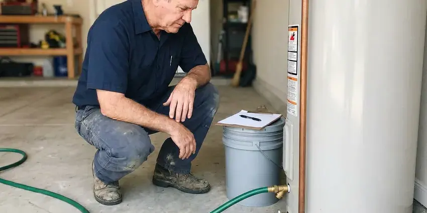
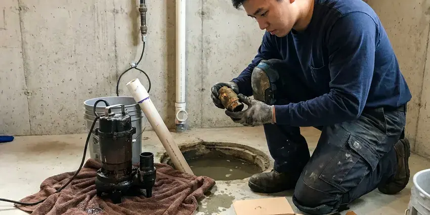

Water Leak Detection in Davenport, IA
For accurate water leak detection in Davenport, IA, trust the experienced team at KFR Plumbing. We promptly locate leaks to prevent costly repairs and water waste.
- Same-Day Water Leak Testing
- Expert Plumbers
- Modern Technology
- Minimize Property Damage
Get Reliable Water Leak Detection in Davenport, IA.
Don't let a hidden leak cause serious damage to your home. Contact KFR Plumbing for prompt and reliable service.
Water Leak Detection in Davenport, IA That Explains Your High Water Bill
KFR Plumbing specializes in accurate water leak detection for homes across Davenport, IA. Our plumbers are trained to identify leaks using non-invasive methods, from under slabs to behind walls, preventing costly repairs down the line.
Our expertise includes:
- Toilet, faucet, softener and water heater leak troubleshooting
- Pinpoint hidden slab leaks with precision.
- Slab leak detection and repairs.

Additional Plumbing Maintenance Services in Davenport, IA
Our maintenance and specialty plumbing services in Davenport, IA catch small problems before they become emergencies.


Davenport water heater maintenance specialists


Davenport sump pump maintenance specialists


Customers
Why Choose KFR Plumbing for Water Leak Detection in Davenport, IA?
Soil that expands and contracts makes early leak detection crucial for protecting your home's foundation from shifting and cracking. Basements are standard in most Iowa homes, so sump pumps, floor drains, and foundation seepage are common service concerns.
- Systematic Testing, We isolate each part of your water system to find exactly which one is leaking.
- Water Bill Savings, Even small, unnoticed leaks can noticeably increase your monthly water expenses.
- Bill Explained, We help you match water loss to your bill so you understand the problem.
Citywide Coverage
We offer water leak detection to homes and businesses throughout Davenport, from large irrigated lots to compact townhomes. Every technician carries meter testing, acoustic and thermal tools.
Experienced Team
Our team understands how local homes use water, including summer irrigation and pool top-offs. That context helps them separate normal use from a true leak.
Safety-First Approach
We always prioritize the safety of your property and its occupants during leak detection. Our methods are designed to be safe and minimally disruptive, followed by repairs that adhere strictly to local plumbing regulations in Davenport.
Trusted Certified Davenport Plumbing Services Professionals
At KFR Plumbing, we take pride in providing certified plumbing services throughout Davenport, IA. Backed by recognized industry credentials, our experienced plumbers combine technical skill with genuine customer care. Whether it is repair, installation, or maintenance, we follow strict safety and quality standards to deliver long-lasting results you can trust.
Call Us Now PHCC Plumbing Contractor Recognition
PHCC Plumbing Contractor Recognition Better Business Bureau (BBB) Accreditation
Better Business Bureau (BBB) Accreditation Angi Certified Pro
Angi Certified Pro ISO 9001 Quality Management Certification
ISO 9001 Quality Management CertificationTrusted Water Leak Detection Services in Davenport, IA
Advanced Leak Detection Technology in Davenport
KFR Plumbing invests in modern leak detection technology to provide the most accurate and non-invasive service possible in Davenport. This includes high-resolution thermal cameras for detecting temperature changes caused by hidden moisture, sensitive acoustic sensors that listen for the subtle sounds of escaping water, and video pipe inspection cameras for internal pipe diagnostics. These tools allow us to find leaks with minimal disruption to your property.

Water Heater and Softener Leak Detection in Davenport
Water heaters and softeners can leak at fittings, valves and drain lines. A softener stuck in regeneration can send water down the drain continuously, and a dripping relief valve on a water heater wastes water too. We check these units carefully and repair or replace failed parts. That often explains a mystery bill in homes that have water softeners.
Leak Detection for PEX and Copper Pipes in Davenport
Whether your plumbing system uses modern PEX tubing or traditional copper pipes, KFR Plumbing has the expertise to detect leaks in both materials. PEX, while flexible, can be susceptible to damage from rodents or improper installation, while copper can corrode over time, especially with hard water. Our tools are effective across many pipe materials, ensuring accurate detection regardless of your home's plumbing type.
Commercial Water Leak Detection in Davenport, IA
Commercial properties in Davenport face added challenges with larger, more complex plumbing systems. Leaks can disrupt business operations, lead to costly downtime and damage inventory. KFR Plumbing offers dedicated commercial leak detection services, using industrial-grade equipment to locate leaks in large facilities, multi-story buildings and specialized systems. We work efficiently to minimize impact on your business, providing rapid diagnosis and repair solutions.
Yard and Outdoor Leak Detection in Davenport
Leaks in outdoor plumbing, irrigation systems or main water lines buried in your yard can lead to wasted water and landscaping damage. We use ground-penetrating radar and tracer gas detection to locate buried pipes and identify leaks without major digging. Our approach minimizes disruption to your lawn and garden, protecting your property's appearance. Detecting these outdoor leaks early can also prevent erosion and potential foundation issues caused by saturated soil, a critical concern for homes in Davenport, IA.
Water Meter Leak Testing in Davenport
The water meter is the first and easiest leak test. With every fixture and appliance off, a moving leak indicator means water is escaping somewhere. We read the flow rate to estimate how many gallons are being lost. Then we shut off zones one at a time to see which part of the property is leaking.
Slab Leak Detection in Davenport
Slab leaks are common in homes on shifting soil and moving foundations. These leaks occur in pipes beneath your concrete slab, often indicated by warm spots on the floor, sudden spikes in your water bill or the sound of running water when all fixtures are off. KFR Plumbing uses dedicated acoustic listening devices and thermal imaging cameras to precisely locate these hidden leaks without destructive guesswork. Early detection is key to preventing major foundation damage.

Pinhole Leak Detection in Davenport, IA
Pinhole leaks, often found in copper or PEX piping, are small but can cause significant damage over time, especially behind walls or under floors. We employ non-invasive moisture meters to detect elevated humidity levels and thermal cameras to identify cold spots that indicate water. Our plumbers are skilled at tracing these elusive leaks without tearing apart your entire home. Swift action on pinhole leaks prevents extensive drywall damage, mold growth and compromised structural integrity. Iowa has long, cold winters and hot, humid summers, and those extremes put steady stress on pipes, water heaters, and sump pumps.
Water Leak Detection Service Near Me in Davenport, IA
Choosing KFR Plumbing means picking a local company that cares about our Davenport neighbors. We're not just plumbers; we're part of the community, committed to delivering reliable water leak detection services with a personal touch. Trust us to be there when you need us most, providing peace of mind and protecting your property.
When you search for "water leak detection near me" in Davenport, IA, KFR Plumbing is your reliable local expert. We are very familiar with the plumbing systems and common leak issues affecting homes throughout the area. Our proximity means faster response times and technicians who understand local conditions.
KFR Plumbing at a Glance
- Licensed and insured plumbers serving Davenport, IA
- Same-day appointments and 24/7 emergency response
- Clear written estimates, no hidden fees
- 4.8-star rated by 620+ Iowa customers
Davenport Map
Davenport Information
- Population
- 100,354
- Area codes
- 563/309/641
- Service area
- Davenport and communities within 40 miles
- Nearby
- Bettendorf, Iowa City, Marion, Cedar Rapids
Water costs money in Davenport, IA, and hard water, slab foundations and irrigation all make hidden leaks common, so finding them quickly protects both your home and your budget. Water softeners are a standard upgrade in Iowa homes, helping protect tank water heaters, faucets, and appliances from mineral damage.
Expert Services
Trust our professionals for reliable KFR Plumbing solutions in Davenport, IA.
Our Specialized Plumbing Services in Davenport, IA
At KFR Plumbing, we provide a complete range of plumbing services across Davenport, IA. From leak detection to full system installations, our team ensures fast, precise, and affordable service for both residential and commercial properties. Explore our core services below:


How Our Water Leak Detection Process Works in Davenport, IA
We follow a step-by-step approach to accurately locate water leaks, giving you a precise diagnosis and effective repair strategy in Davenport, IA.
Request a Quote
Contact (515) 308-3583 to schedule your water leak detection service. Our friendly team will gather initial information about your concerns and set up an appointment that fits your schedule.
On-Site Assessment
A certified plumber will arrive at your Davenport home to conduct an initial visual inspection and discuss any signs of a leak you've noticed. We'll use our expertise to narrow down the potential leak areas.
Precision Detection
We use specialized tools like acoustic listening devices, thermal cameras and moisture meters to accurately locate the hidden leak. Our non-invasive methods keep damage to your property minimal during the detection phase.
Frequently Asked Questions About Water Leak Detection in Davenport
The cost of water leak detection in Davenport, IA usually ranges from $250 to $750, depending on the complexity and location of the leak. Factors like whether it's a slab leak, a wall leak or an outdoor pipe leak can affect the final price. This initial cost covers the specialized equipment and expertise needed to accurately pinpoint the problem before any repairs begin.
A rising water bill, the sound of running water, damp spots, mildew odors and a constantly running water heater or softener are common signs. Unusually green patches in the yard can indicate an irrigation or service line leak. Call us if you notice any of these.
Yes, hard water can contribute to plumbing issues over time. Mineral buildup can speed up corrosion in pipes, especially older copper or galvanized lines, increasing the likelihood of leaks. Regular maintenance can help limit this.
Yes. Repairs we complete carry a written workmanship warranty, and parts include manufacturer warranties. Smart valves also include their own coverage.
Small repairs typically do not require a permit, but service line replacements and repipes often do. Requirements vary by city and county. We take care of any permits needed.
We install smart shutoff valves such as Moen Flo and Phyn, along with wireless leak sensors. These monitor flow and can shut off water when a leak is detected. You get alerts on your phone.
Irrigation and pool top-offs naturally increase summer use. But a big jump compared to last summer often points to a leak, especially in irrigation. We can test to find out.
For minor water leak repairs that don't involve significant alteration to the plumbing system, a permit is usually not required. However, for extensive pipe replacements, re-piping a section of your home or major slab leak repairs, a plumbing permit from the local building department may be necessary. Our team will advise you on any permit requirements.
What People Are Saying About Our Plumbing Experts?

Sofia M.
Two new toilets installed in one visit, no mess left behind, and the tech even adjusted a faucet he noticed was dripping. Fair pricing and really friendly.
Toilet Installation · Dubuque, IADaniel K.
A pipe burst at 11 pm and they actually answered. The plumber showed up within the hour, shut everything down, and had us back to normal the next morning. Could not ask for more.
Emergency Plumbing · Bettendorf, IAPatricia H.
We had a slab leak that two other companies could not find. KFR Plumbing located it in under an hour, explained our options, and the price matched the quote to the dollar.
Slab Leak Repair · Marion, IALaura S.
I scheduled a water heater replacement, and the team made the process smooth and affordable. The new unit works perfectly, and they cleaned up after completing the job.
Water Heater Replacement · Dubuque, IA
Emily R.
I called KFR Plumbing for plumbing repair, and the technician was fast, polite, and thorough. They explained the problem clearly and fixed it the same day. I will definitely hire them again. Highly recommended!
Plumbing Repair · Marion, IA
Robert G.
The trenchless sewer replacement saved our front yard. They walked us through the camera inspection footage first so we knew exactly what we were paying for.
Sewer Line Replacement · Davenport, IA